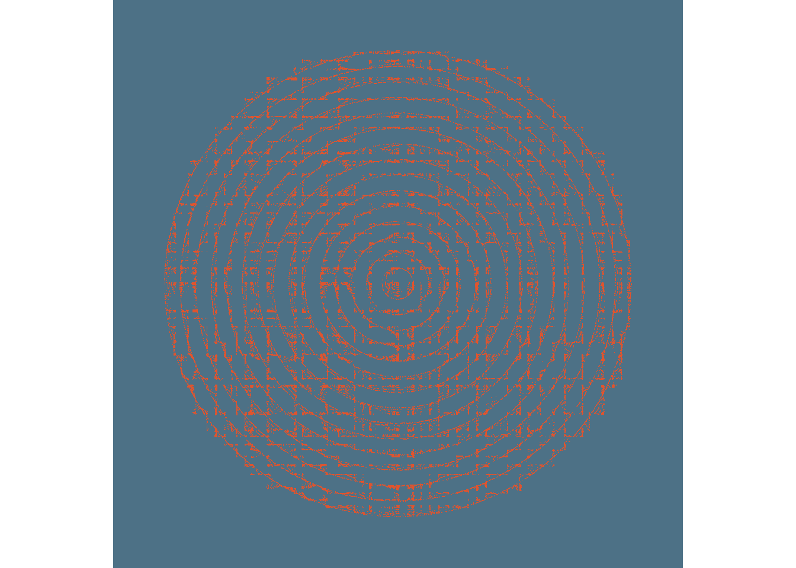

library(dplyr)##
## Attaching package: 'dplyr'## The following objects are masked from 'package:stats':
##
## filter, lag## The following objects are masked from 'package:base':
##
## intersect, setdiff, setequal, union#install.packages("devtools", dependencies = TRUE)
#library(devtools)
#devtools::install_github("djnavarro/jasmines")
library(jasmines)
p0 <- use_seed(5) %>%
scene_discs(
rings = 15,
points = 25000,
size = 50
) %>%
mutate(ind = 1:n()) %>%
unfold_warp(
iterations = 7,
scale = .5,
output = "layer"
) %>%
unfold_tempest(
iterations = 5,
scale = .01
) %>%
style_ribbon(
color = "#E0542E",
colour = "ind",
alpha = c(1,1),
background = "#4D7186"
)
p0